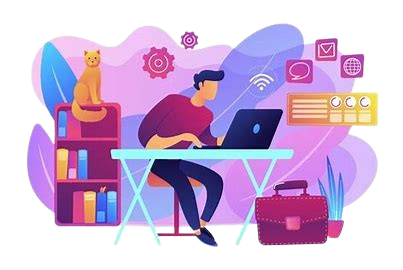
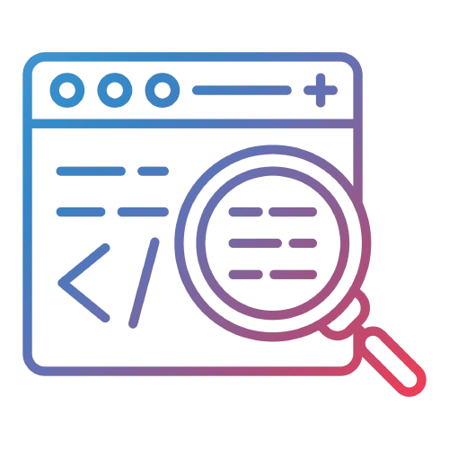
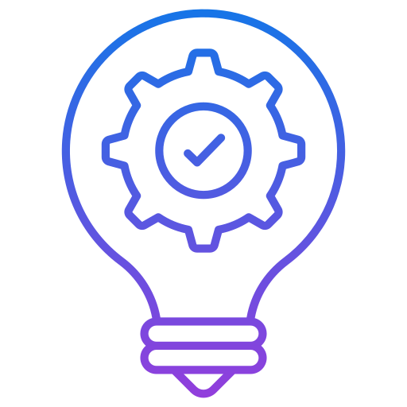

Ce blog offre une vue d'ensemble du projet, couvrant la chefferie de projet, la planification, et la gestion des étapes de développement. Les membres de l'équipe, Marine JACOLOT et Nathan BONNELL, apportent des perspectives techniques dans leurs blogs respectifs. Marine JACOLOT se concentre sur les maquettes, le design, et le développement front-end, tandis que Nathan BONNELL se spécialise dans le back-end, couvrant la gestion des serveurs et des bases de données. Pour en savoir plus, explorez leurs contributions via les liens fournis vers leurs blogs.
Découvrez comment le Click and Collect révolutionne le commerce en ligne en combinant la commodité des achats sur internet et la rapidité du retrait en magasin. Apprenez pourquoi cette méthode est adoptée massivement depuis 2019 et comment elle augmente la satisfaction client. Explorez les avantages stratégiques et les mesures de conformité RGPD essentielles pour garantir la sécurité des données personnelles. Enfin, plongez dans une approche personnalisée pour créer des sites de Click and Collect performants et conformes aux normes, assurant un avantage concurrentiel majeur. Lisez l'article complet pour comprendre les enjeux et les meilleures pratiques de cette évolution clé dans le commerce moderne.
Plongez dans les coulisses d'un stage enrichissant en développement web. Découvrez comment une équipe de stagiaires a navigué à travers la gestion de projets complexes, de la présentation des propositions initiales aux réunions stratégiques. Apprenez comment les compétences acquises durant la formation ont été mobilisées pour surmonter des défis réels, y compris le recodage complet d'un projet pour l'optimiser. L'article explore également l'intégration astucieuse de solutions techniques, telles que l'utilisation d'une Raspberry Pi Pico pour simplifier la gestion des commandes en ligne. Suivez cette aventure où rigueur, communication efficace et anticipation des besoins futurs sont les maîtres mots. Une lecture inspirante pour quiconque s'intéresse au développement web et à la gestion de projets dans un contexte professionnel.

Découvrez les avantages et les défis du télétravail dans cet article captivant. Vous y trouverez comment cette pratique moderne permet des économies significatives, une meilleure gestion du temps, et une amélioration du bien-être personnel. Toutefois, il aborde également les défis tels que l'isolement social et les exigences technologiques, tout en offrant des conseils pratiques pour réussir à travailler efficacement depuis chez soi. Plongez dans cette exploration équilibrée pour comprendre comment le télétravail peut transformer votre manière de travailler et de vivre.
Fixer des objectifs est essentiel pour réussir, tant personnellement que professionnellement. Les objectifs fournissent une direction claire, motivent et permettent de mesurer les progrès. L'article explore l'importance des objectifs, la gestion du temps pour respecter les délais, la créativité pour surmonter les obstacles et l'échange avec les pairs pour enrichir ses compétences. En intégrant ces pratiques, on maximise ses chances de succès et améliore continuellement ses compétences et méthodes de travail.

Cet article traite de la vérification du bon fonctionnement du site en version vitrine avant l'activation de l'option Click and Collect. Il souligne l'importance de garantir une navigation fluide, un affichage correct, et une compatibilité multi-appareils. Le site doit permettre l'activation ou la désactivation facile de l'option Click and Collect, avec des tests spécifiques pour assurer son intégration et son impact sur l'expérience utilisateur. Le passage en version vitrine modifie l'aspect et certaines fonctionnalités du site, simplifiant le processus de commande et centrant la communication sur la promotion des produits. Une préparation rigoureuse est essentielle pour une transition réussie vers les fonctionnalités supplémentaires.
Cet article résume la réunion de fin de stage, mettant en lumière la réussite du projet de site en version vitrine. Accueillie favorablement, cette version a suscité un intérêt pour poursuivre la collaboration, notamment pour l'hébergement du site et l'intégration future de l'option Click and Collect. Quelques finitions sont encore à apporter, mais les maîtres de stage ont exprimé leur satisfaction et remercié les stagiaires pour leur travail et leur engagement. L'article conclut sur les perspectives positives de cette collaboration.

Ce stage a été une expérience enrichissante, me permettant de renforcer mes compétences techniques et de gestion de projet tout en contribuant à la création d'un site vitrine évolutif. J'ai relevé des défis complexes, comme l'optimisation du site et l'intégration de nouvelles technologies, tout en m'adaptant aux exigences du télétravail. Les objectifs fixés ont été atteints grâce à une collaboration efficace et une gestion rigoureuse. La satisfaction des maîtres de stage et les perspectives de collaboration future témoignent de la réussite de ce projet.